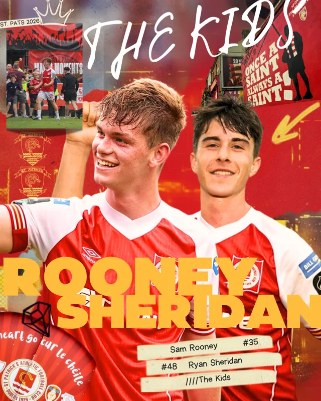
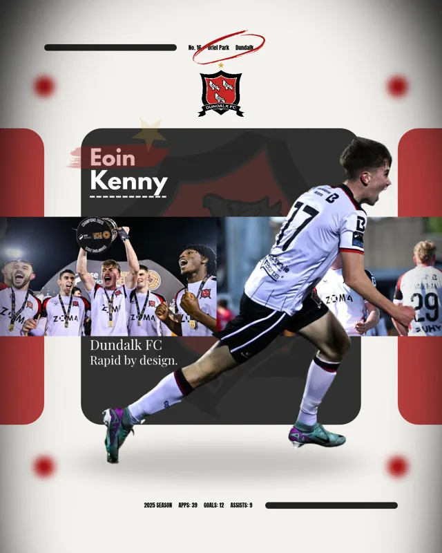
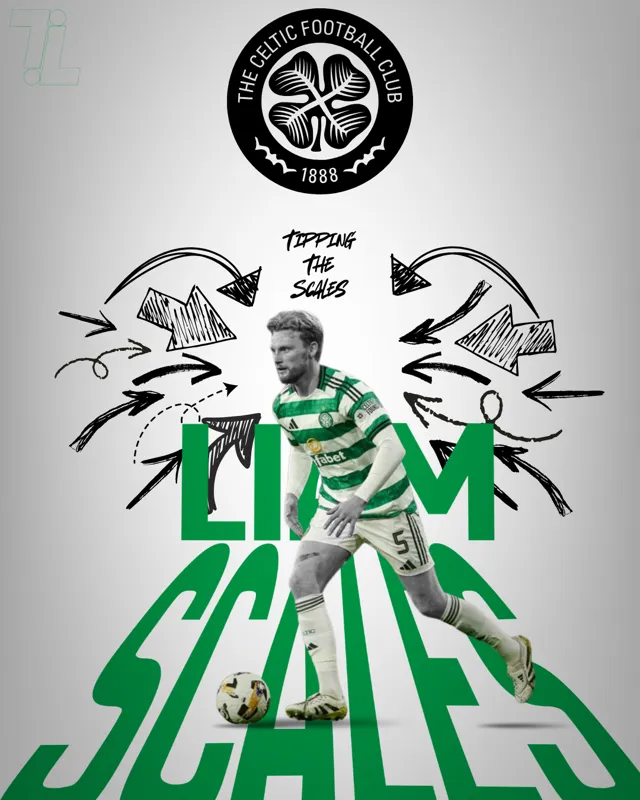
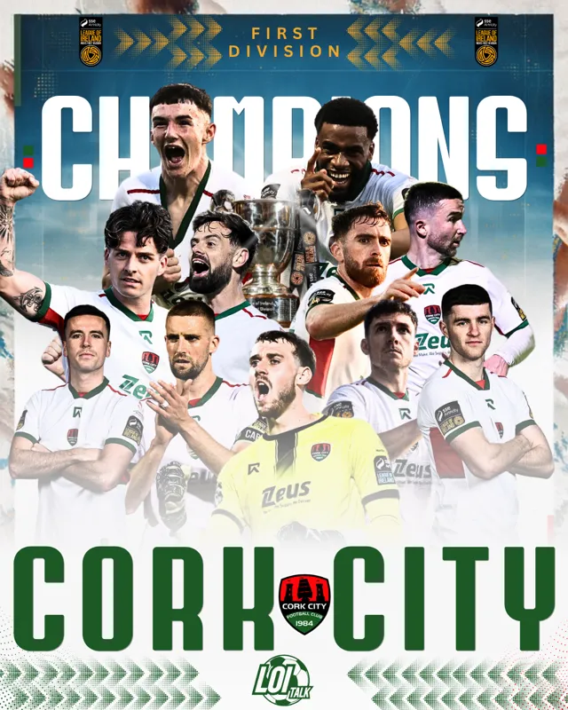
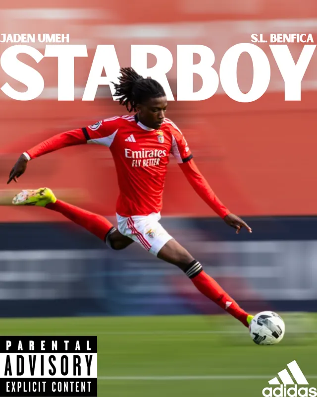
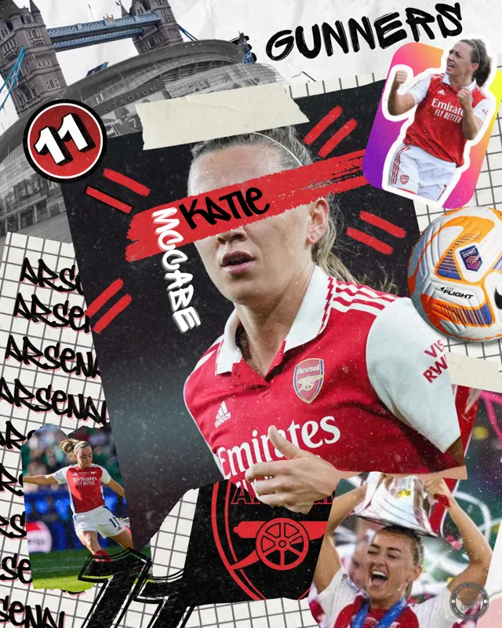
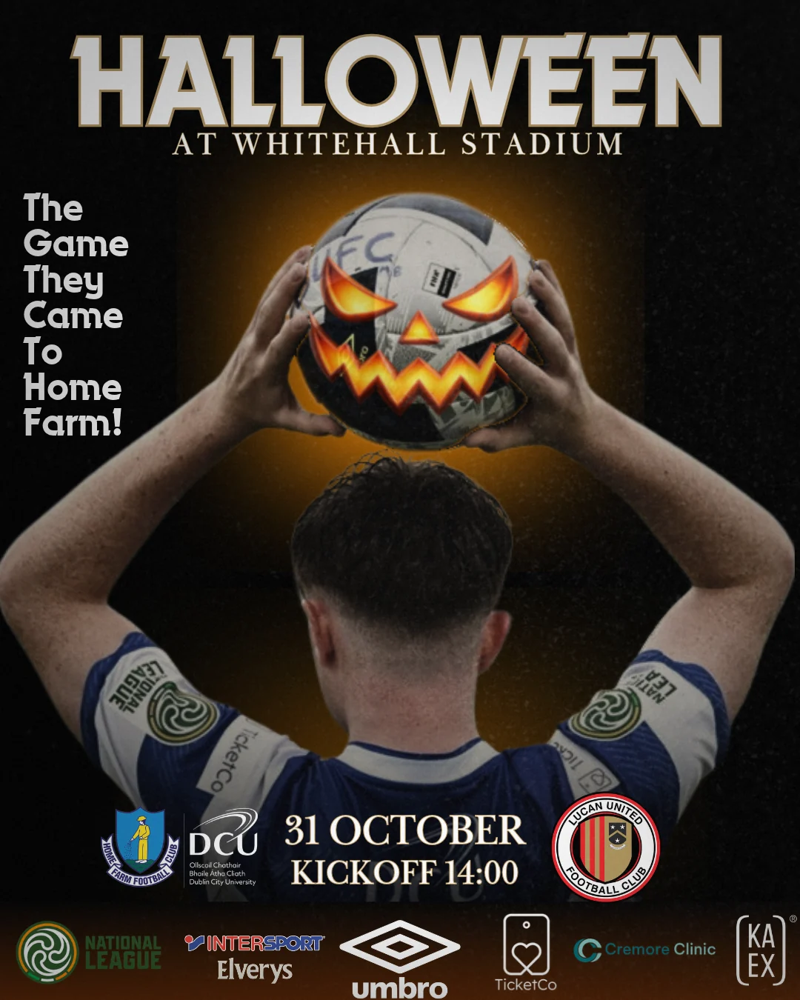

Some of the graphics.
Player pieces, matchday designs, editorial artwork and the odd idea that started with a sketch and went a bit further.






Home Farm DCU.
Two Halloween matchday designs for Home Farm DCU’s fixture against Lucan United at Whitehall Stadium. One fixture, two very different takes on the occasion.

Halloween at Whitehall.
Matchday artwork drawing on horror film imagery, club colours and a Halloween atmosphere. View both posters.
See the Home Farm graphics ↗Weston-super-Mare AFC.
A personal social-media rebrand concept, from the visual identity to matchday, goals, team news and player features.

A different look for the Seagulls.
Photography-led designs, bold condensed type and a consistent black, white and gold palette. Explore all nine slides.
Explore the Weston project ↗Building an audience from nothing.
When I was involved with Bohemians Academy, the academy Instagram account grew from zero to more than 8,000 followers in less than three months. It’s one of the projects I’m proudest of, partly for the growth, but mostly because academy football deserved the attention.
There was a lot of everyday work behind it: content, graphics, knowing the audience and making sure the account looked and sounded like it belonged to the club.
See the media case study ↗More than the graphic.
The design is only one part of the job. I’ve worked on publishing schedules, content, news coverage and the less glamorous bits that keep a football media operation going.
A few good stories.
I've written for RTÉ Sport and independent publications, and published plenty through Touchline. These are three pieces that readers have spent a bit of time with.
Sligo Rovers: Can Fan Ownership Still Compete?
A closer look at what supporter ownership means when the money around Irish football keeps changing.
Read the article ↗No Grand Designs: Football's Infrastructure Logjam
The facilities problem holding Irish football back, and the difficult decisions needed to address it.
Read the article ↗AZ Alkmaar: Europe's Most Efficient?
A club strategy feature on recruitment, development and punching above your weight.
Read on Boardroom Ball ↗Touchline readership data: 28 October 2026 Substack snapshot. Artwork here is from my design portfolio, not necessarily the original article imagery.
FAI Grassroots coaching badge · Guest on TicketCo Podcast and The LOI Talk Pod
More about me ↗Football’s taken me into a few different things.
I graduated from TU Dublin with a BA (Hons) in Business & Law and I’m studying an MSc in Business Intelligence & Digital Marketing at Brunel University London.
Some of my work is writing. Some of it’s design, media, strategy or analysis. I quite like the mix.
More about me ↗